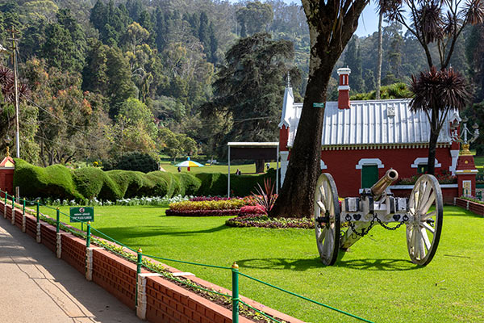
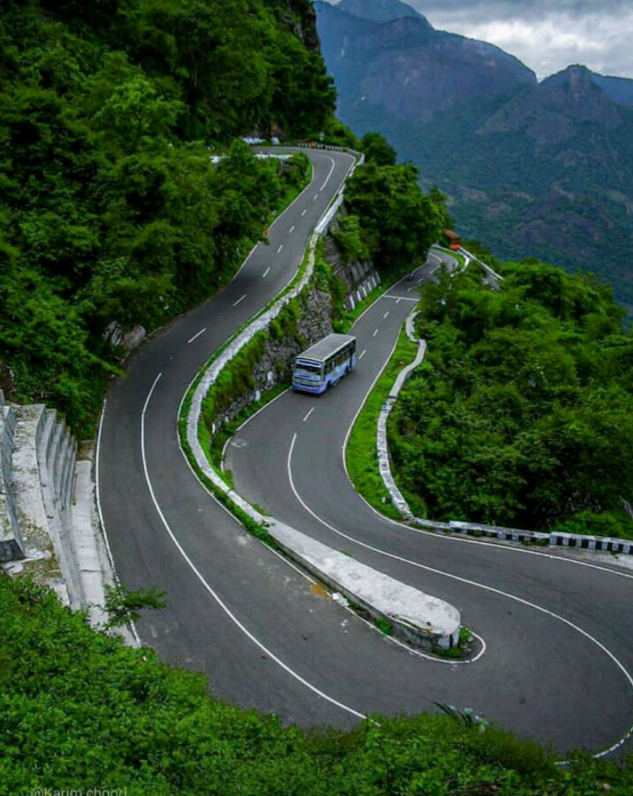

Ooty, also known as Udhagamandalam, is a picturesque hill station nestled in the Nilgiri Hills of Tamil Nadu, India. Famous for its cool climate, lush green valleys, and tea plantations, Ooty attracts nature lovers and tourists year-round. Often called the “Queen of Hill Stations,” it features scenic spots like the Ooty Lake, Botanical Gardens, and Doddabetta Peak.
Ooty is renowned for its unique blend of natural beauty, pleasant climate, and rich cultural heritage. One of its key specialities is the vast expanse of tea plantations that produce high-quality Nilgiri tea, popular both in India and abroad. The town is also famous for homemade chocolates, eucalyptus oil, and fresh vegetables grown in its fertile soil. Tourists are drawn to attractions like the Ooty Botanical Gardens, Rose Garden, and Ooty Lake, as well as the scenic Nilgiri Mountain Railway. The cool weather, even in summer, makes Ooty a refreshing retreat, while its traditional Toda culture and local handicrafts add to its charm and uniqueness.
The Ooty Botanical Gardens is one of the most iconic and beautifully maintained gardens in South India. Spread over 55 acres, it is home to more than a thousand species of plants, including rare ferns, orchids, bonsai, and flowering shrubs. Established in the 19th century, the garden is divided into several sections such as the Lower Garden, New Garden, Italian Garden, and Conservatory. One of the highlights is a fossilized tree trunk believed to be over 20 million years old. The garden is especially vibrant during the annual flower show held in May, attracting nature lovers and tourists from all over the world.

Ooty Lake is an artificial lake created in 1824 by John Sullivan, the founder of Ooty, and remains a central attraction in the town. Surrounded by eucalyptus trees and greenery, the lake stretches over 2.5 kilometers and offers paddle and row boating facilities. The boathouse located on the shore adds to the charm, often buzzing with tourists enjoying boat rides and local snacks. The area around the lake also features a mini amusement park and horse riding options for children and families. During the Ooty Summer Festival, colorful boat races and cultural events are held, making the lake a vibrant and lively destination.
Doddabetta Peak stands as the highest point in the Nilgiris, with an altitude of 2,637 meters above sea level. Located just 10 km from Ooty, it is a favorite among trekkers, photographers, and nature enthusiasts. The peak offers stunning 360-degree views of the surrounding hills, forests, and plains on clear days. A telescope house at the summit allows visitors to zoom into distant landscapes, enhancing the sightseeing experience. The road to Doddabetta is equally scenic, lined with dense forests and tea gardens, making the journey as memorable as the destination itself.
The Nilgiri Mountain Railway is a UNESCO World Heritage site and one of the most scenic train routes in India. Running between Mettupalayam and Ooty, the train travels through a route filled with sharp curves, tunnels, bridges, and lush green valleys. The steam engine train offers a nostalgic experience, with passengers often leaning out of the windows to soak in the stunning views of tea gardens and misty hills. Built in the early 1900s, the railway is a marvel of engineering, using a unique rack and pinion system to climb the steep slopes. The journey, especially during the monsoon and winter months, is considered a must-do for anyone visiting Ooty.
The Pine Forest in Ooty is a serene and scenic location perfect for nature walks and photography. Towering pine trees line the gently sloping hills, creating a peaceful and refreshing environment. This spot is also a favorite among filmmakers and has been featured in several Indian movies. The cool breeze, earthy aroma, and sound of rustling leaves offer a calming escape from the busy town. It’s an ideal location for a quiet picnic or simply to admire the beauty of nature.
Avalanche Lake is a hidden gem located about 28 km from Ooty. Surrounded by rolling hills and dense forests, the lake is perfect for nature lovers, campers, and anglers. It gets its name from a massive landslide (avalanche) that occurred in the early 1800s. The area is rich in biodiversity and is a great place for birdwatching and trout fishing with permits. Jeep safaris and treks around the lake add to the adventure for those seeking offbeat experiences.
The Wax World Museum in Ooty offers a unique experience with life-size wax statues of famous Indian personalities, freedom fighters, and cultural icons. Set inside a charming colonial mansion, the museum is educational and entertaining for all age groups. The realistic figures and detailed settings give visitors an immersive walk through history and heritage. It's a great indoor activity for families, especially on rainy days or when looking for something different from nature-based spots.
A visit to the Tibetan Market in Ooty is perfect for those who love local shopping and street culture. Located near Charring Cross, the market is lined with shops selling woollen clothes, handmade crafts, Tibetan jewelry, bags, and souvenirs. Bargaining is common, and the vibrant atmosphere makes it a fun shopping experience. You can also enjoy some warm momos, thukpa, or local snacks from the nearby food stalls. It’s a great place to experience the blend of cultures and bring home something memorable.
One of the most practical ways to travel from Kollam to Ooty is by road, covering a distance of approximately 430 kilometers one way. The route typically passes through Thenmala, Tenkasi, Madurai, Dindigul, and Coonoor, offering glimpses of Kerala’s greenery and Tamil Nadu’s hilly terrain. A two-way road trip totals around 860 kilometers and can take between 20 to 24 hours of driving time, depending on traffic, road conditions, and rest stops. This route is favored by many for its flexibility and scenic variation, especially as you approach the Nilgiri Hills. Travelers can choose between private cars, outstation cabs, or long-distance buses operated by KSRTC and TNSTC. It’s advisable to plan the trip over multiple days, incorporating overnight halts to reduce fatigue and explore popular spots en route like Madurai or Coonoor. For a more relaxed experience, avoid traveling during the monsoon season when road conditions may be unpredictable, and always check for hill traffic regulations before entering Ooty.
One of the most scenic ways to reach Ooty is by boarding the Nilgiri Mountain Railway (NMR) from Mettupalayam. The journey starts at Mettupalayam Railway Station, which is connected to major cities like Chennai, Bangalore, and Coimbatore via broad-gauge trains. Once at Mettupalayam, switch to the narrow-gauge NMR toy train, which takes you up through 16 tunnels, over 250 bridges, and past lush tea gardens. The train climbs from roughly 326 meters to 2,240 meters over a distance of 46 kilometers, providing panoramic views of the Nilgiri Hills. Booking tickets in advance is recommended, especially during peak tourist season, as the toy train is very popular among both domestic and international visitors.
For those preferring to travel by road, the most common route is via Coimbatore, which lies on National Highway 544. From Coimbatore, take NH-181 that winds through the foothills of the Nilgiris. The 90-kilometer drive typically takes 3 to 4 hours, passing through scenic towns like Mettupalayam and Coonoor before reaching Ooty. The road is well-maintained up to Mettupalayam, after which it ascends steep hairpin bends through dense forests and tea estates. Regular state-run and private buses ply this route, offering air-conditioned and non-AC options, with multiple departures throughout the day.
Ooty is approximately 270 kilometers from Bangalore, making a road trip from Karnataka’s capital a popular choice for weekend getaways. Travelers can drive via Mysore and Gundlupet, following NH-275 to reach Ooty in about 6 to 7 hours. Another route is via Salem and Coimbatore, which takes a bit longer but offers a different scenic experience through Erode and Mettupalayam. Several private tour operators provide Volvo and deluxe bus services from Bangalore to Ooty, departing in the evening and arriving early morning, which helps maximize sightseeing time. Always check road conditions during the monsoon, as landslides and fog can impact travel times.
Public and private bus networks connect Ooty to various cities and towns in South India. Tamil Nadu State Transport Corporation (TNSTC) operates Volvo, deluxe, and ordinary buses from Coimbatore, Salem, and Bangalore. Karnataka State Road Transport Corporation (KSRTC) and Kerala State Road Transport Corporation (KSRTC) also run services from Bengaluru and Kochi via Mettupalayam and Coonoor. Private operators offer overnight sleeper buses from Bangalore, Chennai, and Mysore, ensuring travelers arrive in the early morning. Bus travel is economical, and booking online in advance during summer and holiday seasons is recommended to secure a seat.
Young travelers in Ooty should definitely check out the quaint cafés dotted around the town, especially those near Charring Cross and Commercial Road. These spots serve artisanal coffee, local Nilgiri teas, and delicious pastries that are perfect for a laid-back afternoon with friends. Many cafés have free Wi-Fi, comfy seating, and vibrant décor, making them ideal for social media-worthy snapshots. Don’t miss out on trying the hot chocolate topped with marshmallows—an absolute hit when the mountain breeze gets really chilly. Weekend open-mic nights are common, so keep an eye out for live music and poetry readings.
For adrenaline junkies, a trip to Avalanche Forest and Lake is a must. You can book jeep safaris that take you over bumpy trails, deep into dense forests, and up to hidden viewpoints—perfect for off-road thrills. There’s also camping by the lake, complete with bonfires, barbecue grills, and stargazing sessions that last past midnight. If you’re into hiking, several short treks start here, leading to secluded waterfalls and treetop viewpoints. Remember to pack good hiking shoes, snacks, and a camera—you’ll want to document every epic moment.
Exploring Ooty’s bustling street food scene is an adventure in itself. Head to the main local market near Charring Cross in the evening to sample street snacks like spicy pakoras, crispy samosas, and steaming momos. Don’t miss the local specialty called “Baatis,” stuffed with potatoes and peas, served hot with chutneys. For a sweet treat, try the freshly made gulab jamun or jalebi from roadside vendors. Prices are pocket-friendly, so you can sample a variety of dishes without worrying about your budget.
The Pine Forest off the Ooty-Coonoor Road is not just a photographer’s paradise—it’s a cool little trek for groups of friends. The path winds through towering pine trees and soft leaf litter, creating an almost cinematic atmosphere. It’s relatively short, so even beginners can manage it, but be prepared for uneven terrain and occasional animal crossings (mostly harmless squirrels and birds). You’ll find plenty of shaded spots for a quick picnic, a game of cards, or a photoshoot with natural backdrops. Aim to arrive early in the morning to beat the crowds and catch the mist settling among the trees.
One of the coolest experiences for youngsters is attending a night bonfire at Emerald Valley, just a short drive from Ooty. Several homestays and campsites host organized bonfire evenings—think roasted corn, marshmallows on sticks, folk music, and group dancing under the stars. It’s a friendly, casual setting where locals and tourists mingle, and if you’re lucky, you might catch a traditional Toda dance performance. Early booking is recommended, as these events often fill up on holiday weekends. Don’t forget to carry a light jacket and some warm socks—the temperature can dip significantly after sunset.